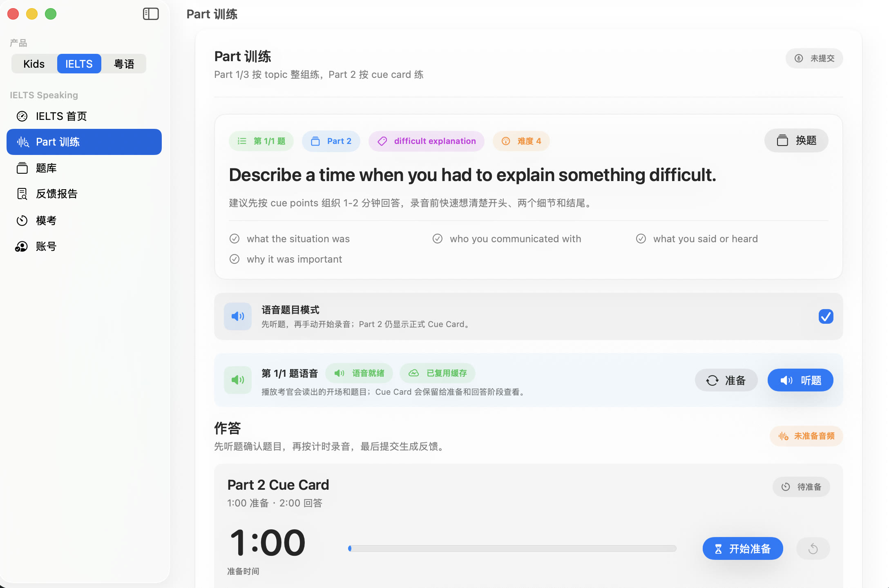
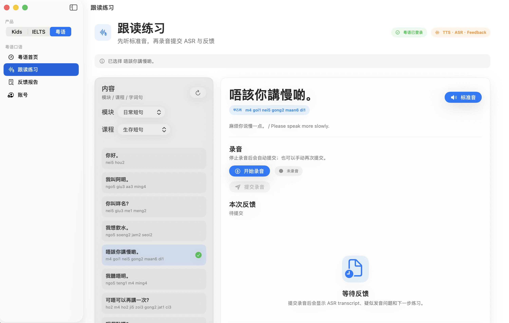

Work / Native macOS · Multi-Product Platform · AI Speech
ClassBridge Product Suite
One project system, three distinct products: ClassBridge Kids, IELTS Speaking Coach, and Cantonese Speaking Coach. They share an engineering platform while serving different users, learning flows, and data boundaries.
- Independent Developer
- Kids / IELTS / Cantonese
- SwiftUI / FastAPI / React
- No. 09

Shared Code Does Not Mean a Shared Product
ClassBridge follows a shared platform plus isolated product context model. The three products can switch inside one macOS app and reuse the same Cloud Gateway and Admin Web, while every request carries an explicit product identity.
Product selection determines navigation, visible content, account authorization, quotas, model configuration, usage logs, and domain data. Kids progress never enters IELTS reports, and IELTS questions never appear in Cantonese lessons.

Graded English for Children Entering a New School Environment
Kids is not a generic vocabulary app. It places daily dialogue, classroom language, subject content, and speech practice into grade-based learning pools. The home screen uses level, due review, and mastery state to choose the next step.
The learning engine maintains mastery through multi-round practice, appended mistakes, and review schedules. Cloud services provide reference audio, speech assessment, contextual lookup, and AI Q&A without disguising local fallback answers as successful cloud results.

A Repeatable Workbench for the Full Speaking Practice Flow
The IELTS product maintains separate question banks and practice states for Parts 1, 2, and 3. Native recording, live waveform, Part 2 preparation and response timing, question audio, ASR, and report generation form one continuous flow.
A structured bank organizes 1,200 questions into 120 themed sets for single-Part sessions, grouped practice, and mock planning. Feedback covers fluency and coherence, vocabulary, grammar, and pronunciation, and is explicitly labeled as an AI estimated band rather than an official score.
Practical Cantonese from Reference Audio to Recorded Feedback
The Cantonese product organizes modules, lessons, words, and phrases with Traditional Chinese, Jyutping, and translations. Learners hear reference Cantonese, record a response, and receive ASR transcription, target-text comparison, and AI-assisted feedback.
Reports preserve transcripts, likely issues, naturalness suggestions, next exercises, and review history. The product focuses on practical shadowing and expression without presenting current model capabilities as precise objective scoring of six tones, initials, finals, or lazy sounds.
Reuse Infrastructure and Keep Differences in the Product Layer
The SwiftUI app provides native desktop interaction and product switching. The FastAPI Gateway owns accounts, content delivery, TTS, ASR, AI, quotas, and usage. React Admin Web manages users, content, model profiles, and operations.
Shared services provide common capabilities only. Kids sessions, IELTS questions and reports, and Cantonese lessons and feedback use separate domain APIs and tables instead of forcing three business workflows into one conditional data model.
One Admin Can Operate Three Products Without Blurring Their Experiences
The multi-product boundary spans client, API, data, and operations. Admin can inspect shared health and cost while content review, model policy, authorization, and report quality stay filtered and configured by product.